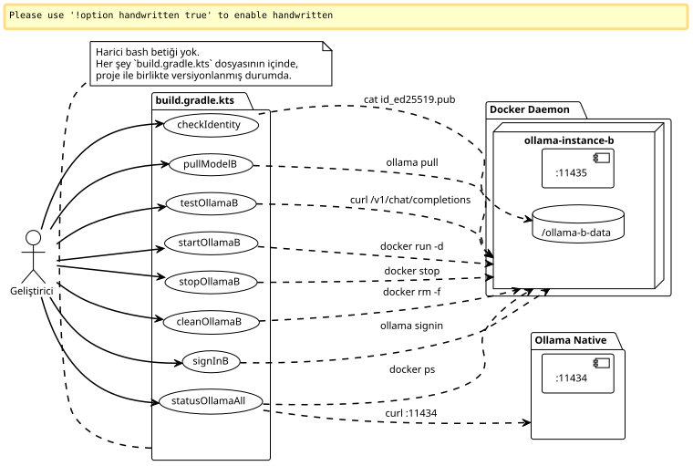
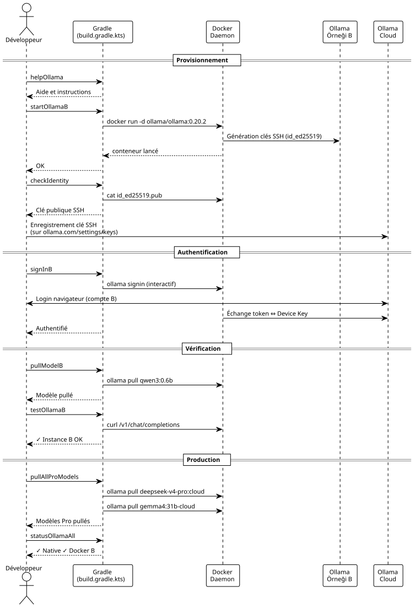

İki Ollama Pro Örneğini Paralel Olarak Yönetmek İçin Özel Gradle Eklentisi
Yayınlandı: 08 May 2026
Gradle görevlerinde her şeyi kapsülleyebilecekken neden docker komutlarını elle yazasınız? İşte harici shell betikleri olmadan dual-Ollama Pro yapılandırmamı nasıl endüstriyelleştirdiğim: Başlatma, durdurma, kimlik, giriş, pull — her şey şunun üzerinden geçiyor:`./gradlew`Lütfen çevirmek istediğiniz metni sağlayın.
Giriş
Önceki makalede, ikinci örneği bir Docker konteynerinde izole ederek aynı makinede iki Ollama Pro hesabının nasıl birlikte çalıştırılacağını gösterdim. Kurulum çalışıyor ancak günlük yönetim kısa sürede zahmetli hale geliyor: konteyner adını hatırlamak, doğru komutları yeniden çalıştırmak`docker exec`, hangi portun aktif olduğunu kontrol et…
14 terminal penceresinin açık olduğu ve yazı yazdığınız o anı bilirsiniz`docker exec ollama-instance-b ollama list`dördüncü kez yaparken ve kendi kendinize «daha temiz bir yolu olmalı» mı diyorsunuz?
Bu araç, Gradle’dır.
Sadece kod build etmek için değil. Yerel altyapının bir orkestra şefi olarak Gradle. Hazırlayan, doğrulayan, test eden ve temizleyen görevler. Hepsi bir … içinde versiyonlanmış`build.gradle.kts`yanında yaşayan`docker-compose.yml`Lütfen çevrilecek metni sağlayın.

Altyapı İçin Neden Gradle?
Soru meşru. Gradle, bir build tool’dur. Normalde derler, test eder, paketler. Docker konteynerleri çalıştırmaz.
Ancak Gradle aynı zamanda bir bağımlılık grafiği motorudur — ve bizim durumumuzda ilginç hale gelen kısım da burasıdır.
İstiyoruz:
-
Konteynerin bir sign-in işleminden önce başlatılması
-
Model pull işleminden önce kimliğin doğrulanması gerekir
-
Konteyner kapalıysa bir API testinin sessizce başarısız olması
Saf bağımlılık grafiğinden. Gradle bunun için biçilmiş kaftandır. Kotlin DSL, görevlerin yazımını akıcı hale getirir ve`doLast`sistem komutlarının uygulama koduymuş gibi yürütülmesini sağlar.
Ve özellikle: bakımı gereken bir bashrc yok, şuralarda dolaşan betikler yok`~/bin`, docker-compose’un yanında Makefile yok. Her şey tek bir dosyada, proje kodunun olduğu yerde yaşıyor.
Tam build.gradle.kts dosyası
İşte sonunda yazdığım dosya. Volume provizyonlamasından doğrulama curl’üne ve etkileşimli sign-in’e kadar her şeyi yapıyor.
import java.io.ByteArrayOutputStream
plugins {
base
}
// -------------------------------------------------------------------------
// Configuration
// -------------------------------------------------------------------------
val instanceName = "ollama-instance-b"
val instancePort = 11435
val instanceImage = "ollama/ollama:0.20.2"
val dataDir = file("${System.getProperty("user.home")}/ollama-b-data")
val nativePort = 11434
// Modèles à gérer — cloud Pro + un modèle local gratuit pour les tests
val proModels = listOf("deepseek-v4-pro:cloud", "gemma4:31b-cloud")
val freeModels = listOf("qwen3:0.6b")
// -------------------------------------------------------------------------
// Tâche préparatoire — création du volume si absent
// -------------------------------------------------------------------------
val prepareVolume by tasks.registering {
group = "ollama"
description = "Crée le répertoire de volume pour l'instance B si absent"
doLast {
if (!dataDir.exists()) {
dataDir.mkdirs()
println("Volume créé : ${dataDir.absolutePath}")
} else {
println("Volume existant : ${dataDir.absolutePath}")
}
}
}
// -------------------------------------------------------------------------
// Démarrage du conteneur Docker
// -------------------------------------------------------------------------
val startOllamaB by tasks.registering(Exec::class) {
group = "ollama"
description = "Lance le conteneur Docker pour l'instance Ollama B"
dependsOn(prepareVolume)
commandLine(
"docker", "run", "-d",
"--name", instanceName,
"-p", "$instancePort:11434",
"-v", "${dataDir.absolutePath}:/root/.ollama",
"-e", "OLLAMA_HOST=0.0.0.0",
"--restart", "always",
instanceImage
)
isIgnoreExitValue = true
doLast {
val alreadyRunning = executionResult.get().exitValue != 0
if (alreadyRunning) {
logger.lifecycle("Le conteneur '$instanceName' existe déjà — tentative de démarrage")
} else {
logger.lifecycle("Conteneur '$instanceName' lancé")
}
}
}
// -------------------------------------------------------------------------
// Arrêt du conteneur
// -------------------------------------------------------------------------
val stopOllamaB by tasks.registering(Exec::class) {
group = "ollama"
description = "Arrête le conteneur Docker de l'instance B"
commandLine("docker", "stop", instanceName)
isIgnoreExitValue = true
doLast {
logger.lifecycle("Conteneur '$instanceName' arrêté")
}
}
// -------------------------------------------------------------------------
// Affichage de la clé publique (Device Key)
// -------------------------------------------------------------------------
val checkIdentity by tasks.registering(Exec::class) {
group = "ollama"
description = "Affiche la clé publique SSH de l'instance B"
dependsOn(startOllamaB)
commandLine("docker", "exec", instanceName, "cat", "/root/.ollama/id_ed25519.pub")
standardOutput = ByteArrayOutputStream()
doLast {
val pubKey = standardOutput.toString().trim()
println("=".repeat(60))
println("Device Key (Instance B)")
println("=".repeat(60))
println(pubKey)
println("=".repeat(60))
println("→ Enregistre cette clé sur https://ollama.com/settings/keys")
println("→ Puis exécute : ./gradlew signInB")
println("=".repeat(60))
}
}
// -------------------------------------------------------------------------
// Sign-in interactif (Ouvrira le navigateur)
// -------------------------------------------------------------------------
val signInB by tasks.registering(Exec::class) {
group = "ollama"
description = "Lance l'authentification interactive Ollama pour le compte B"
dependsOn(startOllamaB)
standardInput = System.`in`
standardOutput = System.out
errorOutput = System.err
commandLine("docker", "exec", "-it", instanceName, "ollama", "signin")
doFirst {
logger.lifecycle("Authentification pour le Compte Pro B...")
logger.lifecycle("Ouvre ton navigateur et connecte-toi avec l'email du compte B")
}
}
// -------------------------------------------------------------------------
// Pull d'un modèle (paramétrable via propriété Gradle)
// -------------------------------------------------------------------------
val pullModelB by tasks.registering(Exec::class) {
group = "ollama"
description = "Pull un modèle sur l'instance B. Usage : ./gradlew pullModelB -Pmodel=nom:tag"
dependsOn(startOllamaB)
val modelName = project.findProperty("model") as? String ?: "qwen3:0.6b"
commandLine("docker", "exec", instanceName, "ollama", "pull", modelName)
doFirst {
logger.lifecycle("Pull du modèle '$modelName' sur l'instance B...")
}
doLast {
logger.lifecycle("Modèle '$modelName' pullé avec succès")
}
}
// -------------------------------------------------------------------------
// Pull de tous les modèles Pro (batch)
// -------------------------------------------------------------------------
val pullAllProModels by tasks.registering {
group = "ollama"
description = "Pull tous les modèles cloud Pro sur l'instance B"
dependsOn(startOllamaB)
doLast {
proModels.forEach { model ->
logger.lifecycle("→ Pull $model...")
val process = ProcessBuilder("docker", "exec", instanceName, "ollama", "pull", model)
.inheritIO()
.start()
process.waitFor()
}
logger.lifecycle("Tous les modèles Pro pullés")
}
}
// -------------------------------------------------------------------------
// Pull de tous les modèles gratuits (batch / première install)
// -------------------------------------------------------------------------
val pullAllFreeModels by tasks.registering {
group = "ollama"
description = "Pull tous les modèles locaux gratuits sur l'instance B"
dependsOn(startOllamaB)
doLast {
freeModels.forEach { model ->
logger.lifecycle("→ Pull $model...")
val process = ProcessBuilder("docker", "exec", instanceName, "ollama", "pull", model)
.inheritIO()
.start()
process.waitFor()
}
logger.lifecycle("Tous les modèles gratuits pullés")
}
}
// -------------------------------------------------------------------------
// Liste des modèles disponibles sur l'instance B
// -------------------------------------------------------------------------
val listModelsB by tasks.registering(Exec::class) {
group = "ollama"
description = "Liste les modèles disponibles sur l'instance B"
dependsOn(startOllamaB)
commandLine("docker", "exec", instanceName, "ollama", "list")
}
// -------------------------------------------------------------------------
// Health check — test API sur les deux instances
// -------------------------------------------------------------------------
val testOllamaB by tasks.registering {
group = "ollama"
description = "Teste la connectivité API de l'instance B avec un simple chat"
dependsOn(startOllamaB)
doLast {
val model = project.findProperty("model") as? String ?: "qwen3:0.6b"
logger.lifecycle("Test de l'instance B avec le modèle '$model'...")
val payload = """
{
"model": "$model",
"messages": [{"role": "user", "content": "Réponds uniquement par OK"}],
"max_tokens": 5
}
""".trimIndent()
val process = ProcessBuilder(
"curl", "-s", "http://localhost:$instancePort/v1/chat/completions",
"-H", "Content-Type: application/json",
"-d", payload
).start()
val response = process.inputStream.bufferedReader().readText()
process.waitFor()
if (response.contains("\"id\":\"chatcmpl") || response.contains("\"choices\"")) {
println("✓ Instance B OK — port $instancePort répond")
println(" Response: ${response.take(120)}...")
} else {
println("✗ Instance B INACTIVE — vérifie le conteneur avec './gradlew statusOllamaAll'")
println(" Raw: $response")
}
}
}
// -------------------------------------------------------------------------
// Health check sur les deux instances simultanément
// -------------------------------------------------------------------------
val statusOllamaAll by tasks.registering {
group = "ollama"
description = "Vérifie le statut des deux instances Ollama (native + Docker)"
doLast {
// Instance native
runCatching {
val process = ProcessBuilder(
"curl", "-s", "-o", "/dev/null", "-w", "%{http_code}",
"http://localhost:$nativePort/api/tags"
).start()
val code = process.inputStream.bufferedReader().readText().trim()
process.waitFor()
println(if (code == "200") "✓ Instance Native — port $nativePort OK (HTTP $code)"
else "✗ Instance Native — port $nativePort (HTTP $code)")
}.getOrElse {
println("✗ Instance Native — injoignable sur le port $nativePort")
}
// Instance Docker
runCatching {
val process = ProcessBuilder(
"curl", "-s", "-o", "/dev/null", "-w", "%{http_code}",
"http://localhost:$instancePort/api/tags"
).start()
val code = process.inputStream.bufferedReader().readText().trim()
process.waitFor()
println(if (code == "200") "✓ Instance Docker B — port $instancePort OK (HTTP $code)"
else "✗ Instance Docker B — port $instancePort (HTTP $code)")
}.getOrElse {
println("✗ Instance Docker B — injoignable sur le port $instancePort")
}
// Info conteneur
runCatching {
val process = ProcessBuilder("docker", "ps", "--filter", "name=$instanceName",
"--format", "table {{.Names}}\\t{{.Status}}\\t{{.Ports}}").start()
val status = process.inputStream.bufferedReader().readText()
process.waitFor()
println()
println("Conteneur Docker :")
println(status)
}
}
}
// -------------------------------------------------------------------------
// Nettoyage complet
// -------------------------------------------------------------------------
val cleanOllamaB by tasks.registering(Exec::class) {
group = "ollama"
description = "Arrête et supprime le conteneur Docker de l'instance B"
dependsOn(stopOllamaB)
commandLine("docker", "rm", instanceName)
isIgnoreExitValue = true
doLast {
logger.lifecycle("Conteneur '$instanceName' supprimé")
logger.lifecycle("Le volume ${dataDir.absolutePath} est conservé (identité persistante)")
}
}
// -------------------------------------------------------------------------
// Affichage des instructions
// -------------------------------------------------------------------------
val helpOllama by tasks.registering {
group = "ollama"
description = "Affiche l'aide des tâches Ollama disponibles"
doLast {
println("""
╔══════════════════════════════════════════════════════════════╗
║ Tâches Gradle — Pilotage Dual Ollama Pro ║
╠══════════════════════════════════════════════════════════════╣
║ ./gradlew startOllamaB Démarrer l'instance Docker B ║
║ ./gradlew stopOllamaB Arrêter l'instance Docker B ║
║ ./gradlew checkIdentity Afficher la clé SSH publique ║
║ ./gradlew signInB Sign-in interactif compte B ║
║ ./gradlew pullModelB Pull un modèle (-Pmodel=...) ║
║ ./gradlew pullAllProModels Pull tous les modèles Pro ║
║ ./gradlew pullAllFreeModels Pull tous les modèles gratuits ║
║ ./gradlew listModelsB Lister les modèles instance B ║
║ ./gradlew testOllamaB Test API avec un chat simple ║
║ ./gradlew statusOllamaAll Santé des 2 instances ║
║ ./gradlew cleanOllamaB Supprimer le conteneur ║
║ ./gradlew helpOllama Cette aide ║
╚══════════════════════════════════════════════════════════════╝
""".trimIndent())
}
}İşte böyle. On iki görev, tek bir giriş noktası ve sıfır sürtünme.
Temel Görevlerin Anatomisi
startOllamaB` — Başlatıcı
hiç büyücülük gerektirmez: bir`docker run -d`doğru parametrelerle. İşin püf noktası şurada:`isIgnoreExitValue = true`Lütfen çevrilecek metni sağlayın.
isIgnoreExitValue = trueKonteyner zaten mevcutsa, komut`docker run`başarısız olur (çıkış kodu ≠ 0). Bu özellik olmasaydı, Gradle tüm build işlemini hata ile durdururdu. Burada başarısızlık sessizdir ve`doLast`bunun "zaten var olan" bir durum mu yoksa gerçek bir hata mı olduğunu tespit eder.
Le `doLast`kritiktir: komut yürütüldükten sonra çalışır, bu da incelemeye olanak tanır`executionResult.get().exitValue`ve uygun bir mesaj kaydetmek.
signInB` — İnteraktif
İnsan etkileşimi gerektiren tek görev budur. Gradle iletir`System.in`işleme, böylece promptun`ollama signin`normal şekilde görüntülenebilsin:
standardInput = System.`in`
standardOutput = System.out
errorOutput = System.errAksi takdirde, stdin kapalı olacağı ve istemi asla göremeyeceğiniz için giriş işlemi (sign-in) engellenecektir.
pullModelB` — Parametrelenebilir
via` üzerinden bir parametre kabul eden genel bir görev`-P`Lütfen çevrilecek metni girin.
./gradlew pullModelB -Pmodel=deepseek-v4-pro:cloud
./gradlew pullModelB # fallback : qwen3:0.6bFallback önemlidir:`project.findProperty("model") as? String ?: "qwen3:0.6b"`parametrenin unutulması durumunda görevin patlamamasını sağlar.
statusOllamaAll` — Tanı
İki`curl`limanlarda sağlıkla ilgili`11434` et 11435, en geri dönüşü (fallback) ile`runCatching`herhangi bir örnek çökmüşse (down) sistemin çökmemesi için. Çıktı şu şekilde yapılandırılmıştır:
✓ Instance Native — port 11434 OK (HTTP 200)
✓ Instance Docker B — port 11435 OK (HTTP 200)
Conteneur Docker :
NAMES STATUS PORTS
ollama-instance-b Up 3 hours 0.0.0.0:11435->11434/tcpBir bakışta neyin çalıştığını ve neyin ters gittiğini tam olarak anlarsın.
cleanOllamaB` — Kimliği Koruyan Temizlik
commandLine("docker", "rm", instanceName)
isIgnoreExitValue = trueKonteyner silinir, ancak birim`~/ollama-b-data`dırkorunmuş. SSH kimliği temizlemeden sonra korunur. Bir sonraki`startOllamaB`, aynı anahtarlar yeniden kullanılacaktır — yeniden oturum açmaya veya Cihaz Anahtarını (Device Key) tekrar kaydetmeye gerek yoktur.
|
|
Tam İş Akışı — Sıfırdan İki Oturuma
İşte projeye yeni gelen ve herhangi bir dokümantasyon açmadan her şeyi kurmak isteyen biri için ideal sıralama:
# 1. Premier contact — que faire ?
$ ./gradlew helpOllama
# 2. On démarre l'instance B
$ ./gradlew startOllamaB
# 3. On récupère la Device Key et on l'enregistre sur ollama.com
$ ./gradlew checkIdentity
# → copier-coller de la clé sur https://ollama.com/settings/keys
# 4. Authentification interactive
$ ./gradlew signInB
# 5. Pull d'un petit modèle gratuit pour tester la plomberie
$ ./gradlew pullModelB
# 6. Test API
$ ./gradlew testOllamaB
# 7. Si tout est vert, pull des modèles Pro
$ ./gradlew pullAllProModels
# 8. Vérification finale des deux instances
$ ./gradlew statusOllamaAllİki dakikadan kısa sürede her şey hazırlandı. Okunacak bir README yok, ayarlanacak ortam değişkenleri yok. Görev`helpOllama`yerleşik dokümantasyon görevi görür.

Neden Gerçek Bir Gradle Eklentisi Yapmıyoruz?
Meşru bir soru. Şunu çıkarın`build.gradle.kts`bağımsız bir Gradle eklentisi olmasının avantajları olacaktır: projeler arası yeniden kullanım, deklaratif yapılandırma, DSL genişletmesi.
Ancak şu an için bunun bir anlamı yok. Bu build’in karmaşık bir iş mantığı yok; Docker komutları ve curl etrafında bir wrapper. Tam teşekküllü bir Gradle plugini (extension, birim testler, yayınlama ile birlikte) katmanı, 12 yardımcı görev için ölçüsüz olurdu.
Le `build.gradle.kts`inline, ona ihtiyaç duyan projenin içinde yaşıyor. Başka bir yere kopyalamak oldukça basit. Eğer bir gün ona bağımlı üç projem olursa, onu bir eklentiye dönüştürürüm. Şimdilik, KISS.
|
Üç tane olduğun gün`build.gradle.kts`üç projede aynıysa, bu bir eklenti çıkarılması gerektiğinin sinyalidir. Buna kadar, tekrarlama soyutlamadan daha az maliyetlidir. Yazılımcı bilgeliği. |
Çıkarılan Dersler
-
Gradle sadece bir build tool değildir— Bağımlılık grafiği motoru, onu korkunç derecede güçlü bir altyapı orkestratörü haline getiriyor.
doLast,isIgnoreExitValue,dependsOn: bu üç primitif, bir Docker konteynerini bir CI hattıyla aynı güvenilirlikte yönetmek için yeterlidir. -
isIgnoreExitValue` senin dostundur— İdeal bir dünyada,`docker run`halihazırda mevcut olan bir konteyner üzerinde bir uyarı döndürürdü, hata çıkış kodu yerine. Gerçek dünyada, şunları koyarsın`isIgnoreExitValue = true`ve tanılamayı şurada yönetiyorsun`doLast`Lütfen çevrilecek metni sağlayın.
-
Parametrelendirilebilir görevler belirsizliği ortadan kaldırır — Un
pullModelB`jenerik ile-Pmodel=…`N adet uzmanlaşmış görevin yerini alır. Tek bir görev, tek bir doküman, tek bir davranış. -
health check’ler için
runCatching— N tane endpoint’i test ederken, ilkinin çökmesi diğerlerini test etmeyi engellememelidir.`runCatching+`getOrElse`uç nokta başına, ve kısmi arıza durumunda bile tanı tam kalmaya devam eder. -
helpOllama` görevi yürütülebilir belgeler olarak — Un `println()`iyi biçimlendirilmiş bir yapı, üç paragraflık bir README’nin yerini tutar. Kendi kendini belgeler, her zaman günceldir ve terminalden çıkmadan erişilebilirdir.
Sonuç
Elle manuel docker komutlarından; versiyonlanmış, yeniden kullanılabilir ve eksiksiz bir Gradle iş akışına geçtik. On iki görev tüm yaşam döngüsünü kapsıyor: provisionnement, kimlik, sign-in, pull, test, diyagnostik ve temizlik.
docker-compose` + build.gradle.kts + opencode.json kombinasyonu temiz bir üçlü oluşturuyor: izolasyon için Docker, orkestrasyon için Gradle, tüketim için OpenCode. Her katmanın kendi sorumluluğu var ve hiçbiri diğerinin alanına taşmıyor.
Sonraki adım mı? Ollama örneklerinin geçici geliştirme ortamlarında kullanılabilir olması için CI’daki yaşam döngüsünü otomatize etmek. Ancak bu, başka bir yazının konusu.
Kaynaklar
Makale 2026-05-08 tarihinde yayınlandı